|
cfiler
|


|
|
cfiler
|
|
| 著作者: | craftware |
|---|---|
| 連絡先: | craftware@gmail.com |
| 開発環境: | Python + VisualC++2010 |
| 種別: | フリーウェア |
| 動作環境: | Windows XP/Vista/7/8 |
| Webサイト: | http://sites.google.com/site/craftware/ |
このソフトウェアは、キーボードで操作する2画面ファイラです。
Windowsをキーボード中心で操作している人にとって便利なソフトです。
特徴
- キーボードで操作
- マウスではほとんど操作できない
- あふ(http://www.h5.dion.ne.jp/~akt/)に強い影響を受けている
- スクリプト言語Pythonを内蔵しており、Pythonで機能拡張が可能
- ファイル操作のバックグラウンド処理
- 一括リネーム機能
- ファイル名サーチ機能
- GREP機能
- テキストビューア内蔵
- テキスト差分ビューア内蔵
- イメージビューア内蔵
- ミュージックプレイヤ内蔵
- ブックマーク機能
- インクリメンタルサーチ機能
- コマンドラインランチャ内蔵
- テキスト入力式の計算機
- FTP / WebDAV 対応 (実験中)
- UNICODEベース
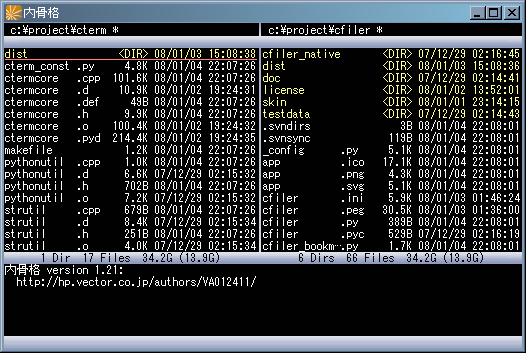起動直後の状態。隙間がないミッシリとしたデザイン
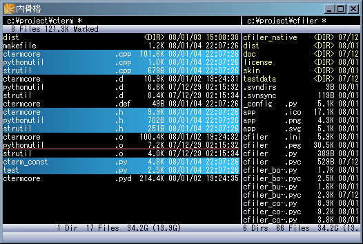ファイルを選択した状態。
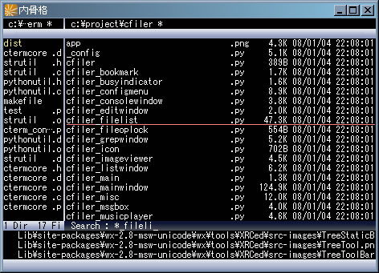インクリメンタルサーチ中。ワイルドカードを使用することが出来る。
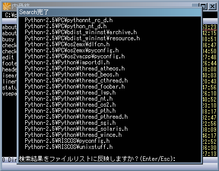ファイル名による検索機能。ワイルドカードを使用することが出来る。 検索結果はファイルリストに反映されるので、検索結果を一括編集したり削除したりと、応用することが出来る
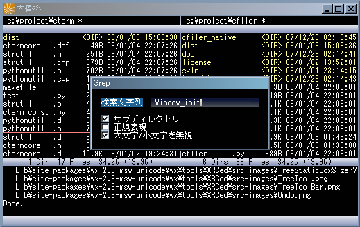GREP機能。正規表現を使用することが出来る。 GREP結果はファイルリストに反映されるので、検索結果を一括編集したり削除したりと、応用することが出来る
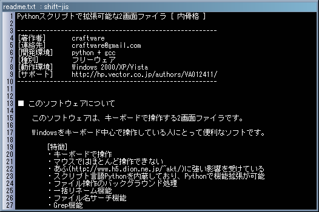テキストビューア
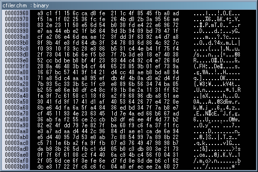バイナリビューア
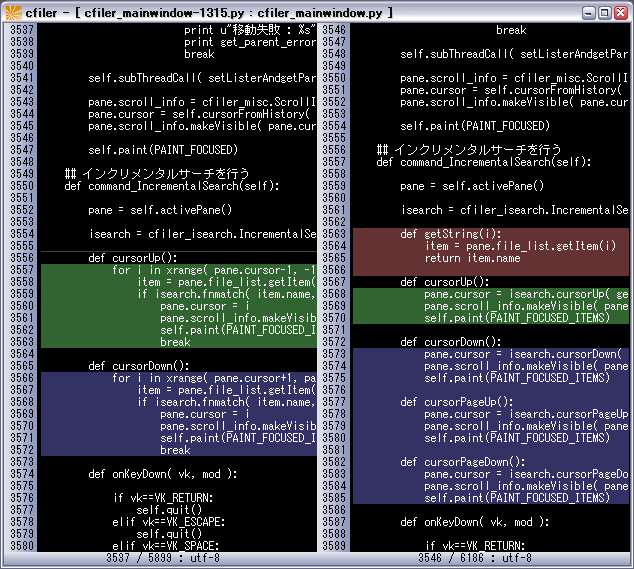テキスト比較機能
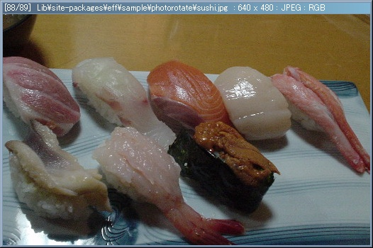画像ビューア。寿司の画像以外も表示できる。
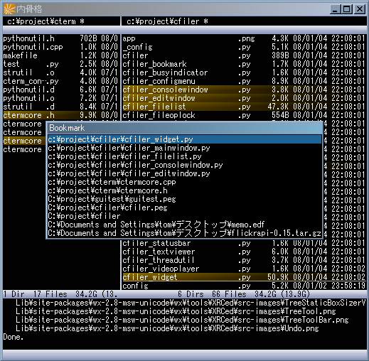ブックマーク機能。 ブックマークされたファイルは背景がオレンジ色になり、リストから飛べるようになる。 現在作業中のファイルをブックマークして、作業を効率化できる。
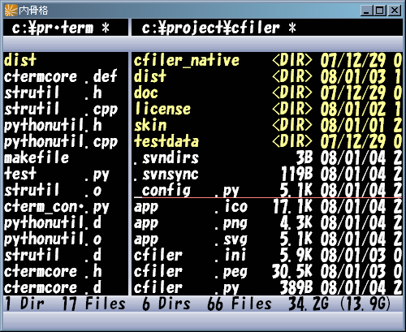フォントを変更することが可能。
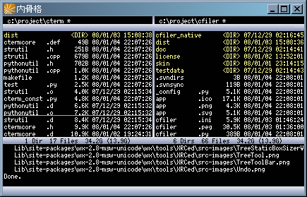小さいフォントが好きな人にも。
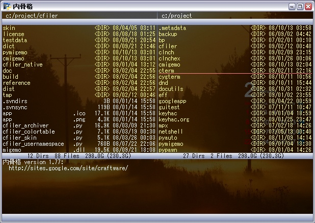壁紙を貼ることが出来る。
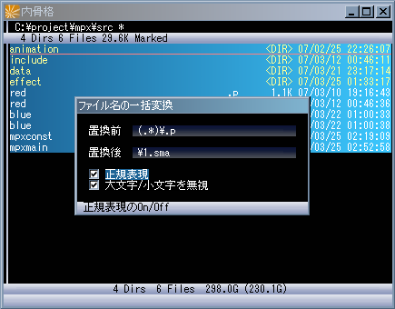一括変名機能。 その気になれば、正規表現を使って凝ったことも出来る。
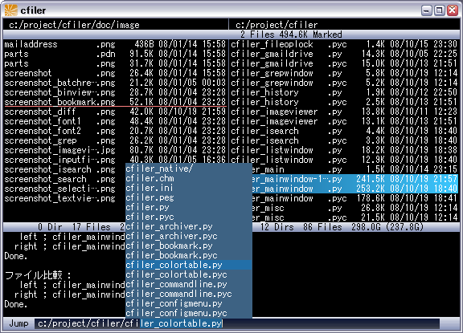ファイル名の入力では、CraftLaunch風の補完機能が使える。
内骨格の実行には以下の環境が必要です。
Windows XP/Vista/7/8
このソフトウェアを二次配布する場合は、作者に事前連絡してください。
このソフトウェアを改造して配布してはいけません。
また、本ソフトウェアの使用によるいかなる損害も保障しかねますので、 プログラムの実行は本人の責任で行ってください。
内骨格に関する質問や要望は、
http://sites.google.com/site/craftware/cfiler/
までお願いします。
インストーラを実行すると以下のファイルとフォルダが作成されます。
名前 解説 cfiler.exe プログラム本体 python34.dll Pythonランタイムライブラリ library.zip スクリプトが格納されているアーカイブ _config.py デフォルト設定ファイル readme.txt 最初に読む文書 src.zip ソースコード uninstall.exe アンインストールプログラム lib/ DLLが格納されているディレクトリ extension/ ユーザサイドのスクリプトを入れるディレクトリ theme/ テーマのデータが格納されているディレクトリ dict/ Migemoの辞書を入れるディレクトリ doc/ ドキュメントが格納されているディレクトリ license/ コピーライト情報が格納されているディレクトリ また、最初の起動で、アプリケーションデータディレクトリに自動的に以下のファイルが作られます。 ( XP では c:/Documents and Settings/Application Data/CraftFifler、Vista/7 では c:/Users/tom/AppData/Roaming/CraftFifler)
名前 解説 config.py 設定ファイル cfiler.ini 状態保存ファイル config.py と cfiler.ini は、cfiler.exe と同じディレクトリにおいておけば、 そちらが優先的に使われます。USBメモリなどで持ち歩く際に便利な方法です。
uninstall.exe を実行するか、Windowsのアンインストール機能で cfiler をアンインストールしてください。
また、アプリケーションデータディレクトリを削除してください。 ( XP では c:/Documents and Settings/Application Data/CraftFifler、Vista/7 では c:/Users/tom/AppData/Roaming/CraftFifler)
このソフトウェアでは、以下のライブラリを使用しています。
- Python Programming Language
- http://www.python.org/
- Pillow
- https://github.com/python-imaging/Pillow
- C/Migemo
- http://www.kaoriya.net/
- 7-zip32.dll
- http://akky.xrea.jp/
- tar32.dll
- http://openlab.ring.gr.jp/tsuneo/index-j.html
内骨格の表示は以下のようになっています。
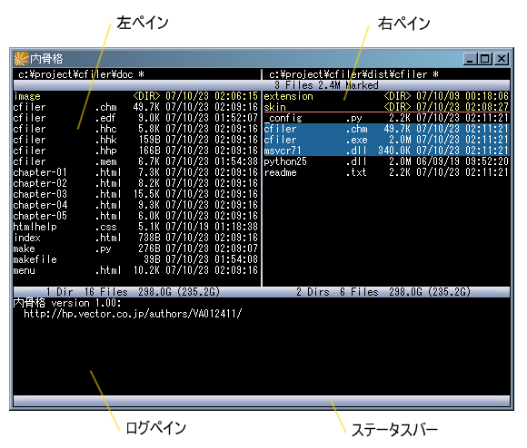左ペイン/右ペイン
左ペインと右ペインには、ファイルのリストが表示されます。
ファイルの複写や移動などの操作を行う際、片方のペインの中で選択されているファイルが、もう片方のペインに表示されているディレクトリに、複写または移動されます。
ログペイン
ログペインには、内骨格の動作に応じて出力されるメッセージが表示されます。ステータスバー
ステータスバーには、内骨格の現在の状態が表示されます。
このソフトウェアは、キーボードを使って操作します。 キーのアサインは以下のとおりです。
キー(106キー設定) 解説 ↑/↓ カーソルの移動 Ctrl + ↑/↓ カーソルの移動(選択されているアイテムかブックマークされているアイテムのみ) PageUp/PageDown カーソルの移動(ページ単位) Ctrl + PageUp/PageDown リストの先頭と末尾に移動 ←/→ アクティブペインの切り替え、または親ディレクトリへ移動 TAB アクティブペインの切り替え Ctrl + TAB 内骨格のウインドウの切り替え BackSpace 親ディレクトリへ移動 ￥ ルートディレクトリへ移動 Alt + ←/→ 左右のペインのサイズを変更 Alt + ↑/↓ 上下のペインのサイズを変更 Ctrl + Alt + ←/→ 左右のペインのサイズを素早く変更 Ctrl + Alt + ↑/↓ 上下のペインのサイズを素早く変更
- (マイナス)
左右のペインのサイズを同じにする Shift + - (マイナス) アクティブなペインを横方向に最大化する Return ファイラー内の関連付け実行(※) Esc 処理の中断 Shift + Esc バックグラウンド処理の中断 Ctrl + Return シェルの関連付け実行 X コマンドラインの入力を開始(※) End ファイル選択をすべて解除 Shift + End ファイルリストを更新 Shift + ↑/↓ ログペインのスクロール Shift + ←/→ ログペインのスクロール(ページ単位) スペース ファイルを選択しカーソルを下へ移動 Shift + スペース ファイルを選択しカーソルを上へ移動 Ctrl + スペース 上方の選択されたアイテムとの間を範囲選択 A ファイルをすべて選択 HOME ファイルをすべて選択 Shift + A ファイルとディレクトリをすべて選択 Shift + HOME ファイルとディレクトリをすべて選択 K 選択されているファイルの削除 (ごみ箱を使用しない) (※) Shift + K 選択されているファイルの削除 (ごみ箱を使用) (※) C 選択されているファイルの複写 (※) Shift + C 複写先を入力して、選択されているファイルの複写 E 選択されているファイルの編集 Shift + E ファイル名を入力して、テキストファイルの編集 F インクリメンタルサーチ (※) Shift + F ファイル名の検索 Shift + G ファイルの内容のパターン検索(grep) I ファイルの統計情報を出力する H ヒストリに移動 (※) J リストから選択して移動 Shift + J パスを入力して移動 Ctrl + J 検索結果に移動 (※) D ドライブを選択 Q アプリケーションを終了 (ファイルを選択せず) M ディレクトリの作成 (※) (ファイルを選択して) M 選択されているファイルの移動 (※) O もう片方のペインのディレクトリと同じ場所に移動 Shift + O もう片方のペインのディレクトリをアクティブなペインと同じにする S ソート方法を選択 : (コロン) フィルタを選択 Shift + : ワイルドカードを入力 (バックスラッシュ) ファイルに対してコンテキストメニュー Shift + ディレクトリに対してコンテキストメニュー @ フィルタを使ってファイル選択 Shift + @ ワイルドカードを入力してファイル選択 W ファイルを比較して選択 Shift + W 比較ツール (ファイル比較、ディレクトリ比較) (※) R 変名 Shift + R 一括変名(※) Ctrl + C ログペインの選択範囲または選択ファイル名をクリップボードにコピー Shift + Ctrl + C フルパスをクリップボードにコピー Alt + C ログペインの全域をクリップボードにコピー P アーカイブを作成 (※) U アーカイブを展開 (※) Shift + U アーカイブの内容をログペインに出力 B 現在のディレクトリ以下のブックマーク一覧を表示 (※) Shift + B 全域のブックマーク一覧を表示 (※) Ctrl + B カーソル位置のファイルをブックマークに追加/削除 . (ピリオド) ミュージックのプレイリストを表示(※) Shift + .(ピリオド) ミュージックの停止とプレイリストのクリア L テキストビューアまたはバイナリビューアの起動 Z 設定メニュー Shift + Z 設定メニュー2 Alt + Z 同じディレクトリを開きながら内骨格を起動 英語配列のキーボードの場合は、一部キーアサインが異なります。 (設定メニュー2で、106キーと101キーのどちらかを選択することができます。)
(101キー設定) 解説 ; (セミコロン) フィルタを選択 Shift + ; (セミコロン) ワイルドカードを入力 / (スラッシュ) ファイルに対してコンテキストメニュー Shift + / (スラッシュ) ディレクトリに対してコンテキストメニュー ' (シングルクオーテーション) フィルタを使ってファイル選択 Shift + '(シングルクオーテーション) ワイルドカードを入力してファイル選択 また、あふ互換モードを選択することが出来ます。あふ互換モード時のキー割り当ては以下のように一部変化します。
キー 解説 D 選択されているファイルの削除 (ごみ箱を使用しない) (※) Shift + D 選択されているファイルの削除 (ごみ箱を使用) (※) K ディレクトリの作成 ※ L ドライブを選択 V テキストビューアまたはバイナリビューアの起動 設定メニュー2で、ファイルの削除に、デフォルトでごみ箱を使用するかどうかを切り替えることが出来ます。
ディレクトリの場合は、そのディレクトリに移動します。
アーカイブファイルの場合は、アーカイブファイルの中の仮想ディレクトリに移動します。対応している形式は [ ".zip", ".7z", ".tgz", ".tar.gz", ".tbz2", ".tar.bz2", ".lzh", ".rar" ] です。 ( ".lzh", ".rar" については、別途コモンアーカイバライブラリ(http://www.csdinc.co.jp/archiver/)をインストールする必要があります。)
画像ファイルの場合は、イメージビューアを起動します。対応しているファイル形式は、[ ".bmp", ".gif", ".jpg", ".jpeg", ".png", ".psd", ".tga", ".tif", ".tiff" ] です。
ミュージックファイルの場合は、ミュージックプレイヤのプレイリストに登録した上で再生します。対応しているファイル形式は、[ ".mp3", ".wma", ".wav" ] です。
テキストファイルの場合は、テキストビューアを起動します。
バイナリファイルの場合は、バイナリビューアを起動します。
C キー および M キーには、それぞれファイルの複写や移動が割り当てられています。
複写処理/移動処理は、サブスレッドで処理されます。複写/移動中でもファイルリストの操作はブロックされません。
すでに複写処理/移動処理が行われている間に、別の複写処理/移動処理を要求したときは、新しい処理がキューイングされ、前の処理が完了した後に実行されます。
複写/移動先に、すでに同じ名前のファイルが存在しているとき、上書き確認のダイアログが表示されます。
処理名 解説 上書き ファイルを上書き 新しければ上書き タイムスタンプを比較して、新しければ上書き 複写しない 複写しない 改名 違うファイル名としてファイルをコピー 上書き確認ダイアログを、Shift キーを押しながら決定することで、後続の上書き処理についても、一括して処理方法を決定することができます。
ディレクトリの作成時、ディレクトリ名を Shift キーを押しながら決定すると、ディレクトリを作成した後、そのディレクトリの中に移動します。
- や ? のワイルドカードを使用することが出来ます。
設定メニュー2で、インクリメンタルサーチの動作タイプを、[ 厳密, 部分一致, あいまい, Migemo ] の中から選択することができます。
インクリメンタルサーチ中のキーアサイン
キー 解説 ↑/↓ 次の検索条件に合うアイテムに移動 Return インクリメンタルサーチを終了 Esc インクリメンタルサーチを終了 Migemo
Migemo はローマ字を入力して日本語をインクリメンタル検索するためのライブラリです。
設定メニュー2の [ I-Search動作選択 ] メニューで [ Migemo ] を選択した上で、インクリメンタルサーチのパターンにアルファベットの大文字と小文字を混在させたパターンを使用することで、ローマ字で日本語のファイル名をインクリメンタルサーチすることが出来ます。
Migemo の入力方法の詳細については、Migemoの本家サイト ( http://www.kaoriya.net/software/cmigemo/ ) を参照してください。
Migemoを使用する場合は、別途辞書ファイルを入手し、以下のように配置しておく必要があります。
- (cfilerのインストール場所)/dict/migemo-dict
- (cfilerのインストール場所)/dict/han2zen.dat
- (cfilerのインストール場所)/dict/zen2han.dat
- (cfilerのインストール場所)/dict/hira2kata.dat
- (cfilerのインストール場所)/dict/roma2hira.dat
辞書ファイルは、C/Migemo のバイナリパッケージに含まれています。
http://cmigemo.googlecode.com/files/cmigemo-default-win64-20110227.zip
テキストビューア中のキーアサイン
キー 解説 ↑/↓ カーソル移動 ←/→/PageUp/PageDown ページ単位のスクロール Return テキストビューアを閉じる Esc テキストビューアを閉じる E 閲覧中のファイルを編集 F 検索 スペース 次を検索 Shift + スペース 前を検索 Z 設定メニューを開く (バイナリモード/エンコーディング切り替え)
ファイルの比較
２つのファイルを比較し、どの部分が異なっているかを並べて表示する機能です。
比較したいファイルを２つ選択したうえでコマンドを実行します。このとき選択するファイルは、片方のペインから２つ選択しても、両方のペインから１つずつ選択してもかまいません。
どちらのファイルもテキストファイルだった場合は、テキスト差分ビューアが開きます。片方または両方がバイナリファイルだった場合は、単にファイルが同一であるかどうかがメッセージボックスで表示されます。
テキスト差分ビューア中のキーアサイン
キー 解説 ↑/↓ スクロール ←/→/PageUp/PageDown ページ単位のスクロール Ctrl + ↑/↓ 次の差分位置までジャンプ Return テキスト差分ビューアを閉じる Esc テキスト差分ビューアを閉じる E 2つのファイルを外部差分エディタで編集 ディレクトリの再帰的な比較
左右ペインのディレクトリを深く比較し、条件に該当するファイルやディレクトリをファイルリストに列挙する機能です。２つのディレクトリの同期をとる際などに便利な機能です。
条件には、以下のいずれかを選択します。
条件 解説 両方に存在 両方のディレクトリに存在する同名のファイルだけを表示します。 片方だけに存在 片方のディレクトリだけに存在するファイルだけを表示します。 内容が同じ 両方のディレクトリに存在し、かつ、内容が同一のファイルだけを表示します。 内容が相違 両方のディレクトリに存在し、かつ、内容が異なるファイルだけを表示します。 片方または相違 [片方だけに存在]と[内容が相違]のどちらかの条件に合致するファイルを表示します。
イメージビューア中のキーアサイン
キー 解説 ↑/↓ 前/次の画像を表示 PageUp/PageDown 10個 前/次 の画像を表示 スペース ファイルを選択し次の画像を表示 Shift + スペース ファイルを選択し前の画像を表示 Return イメージビューアを閉じる Esc イメージビューアを閉じる Alt + Return 最大化/最大化解除 F 最大化/最大化解除 Shift + ↑/↓/←/→ 画像のスクロール Insert 画像を縮小 Delete 画像を拡大 End 画像をウインドウサイズに合わせて表示 Home 画像を元サイズに合わせて表示
単純な文字列の置き換えと、正規表現を使った文字列の置き換えの、2通りの方法でファイル名を一括変更することができます。
正規表現を使う場合、円カッコ "(...)" で括られた部分にマッチした文字列を 1 ～ 9 で置換後のファイル名の一部に利用することができます。また、0 はファイル名全体を表します。d は連番の数字です。
アーカイブファイルを作成するには、ファイルを選択して P キーを押します。
対応しているアーカイブ形式は、[ ".zip", ".7z", ".tgz", ".tar.gz", ".tbz2", ".tar.bz2", ".lzh" ] です。
[ ".zip", ".7z", ".tgz", ".tar.gz", ".tbz2", ".tar.bz2" ] については、内骨格のパッケージに同梱されている 7-zip32.dll と tar32.dll で作成することが出来ますが、".lzh" については、別途コモンアーカイバライブラリ(http://www.csdinc.co.jp/archiver/) をインストールする必要があります。
アーカイブファイルを展開するには、ファイルを選択して U キーを押します。
対応しているアーカイブ形式は、[ ".zip", ".7z", ".tgz", ".tar.gz", ".tbz2", ".tar.bz2", ".lzh", ".rar" ] です。
[ ".zip", ".7z", ".tgz", ".tar.gz", ".tbz2", ".tar.bz2" ] については、内骨格のパッケージに同梱されている 7-zip32.dll と tar32.dll で展開することが出来ますが、[ ".lzh", ".rar" ] については、別途コモンアーカイバライブラリ(http://www.csdinc.co.jp /archiver/)をインストールする必要があります。
".rar" ファイルは、展開することは出来ますが、作成することは出来ません。
ミュージックプレイヤのプレイリスト中のキーアサイン
キー 解説 ↑/↓ カーソル移動 Return カーソル位置のミュージックの再生を開始 Esc プレイリストウインドウを閉じる ピリオド ミュージックの一時停止/再開 Shift + ピリオド ミュージックの停止 F インクリメンタルサーチ
ヒストリウインドウ中のキーアサイン
キー 解説 ↑/↓ カーソル移動 PageUp/PageDown カーソルの移動(ページ単位) Ctrl + PageUp/PageDown リストの先頭と末尾に移動 Return カーソル位置のヒストリを選択 Esc ヒストリウインドウを閉じる ←/→ 左右のペインのヒストリに切り替え Delete ヒストリの項目を削除 F インクリメンタルサーチ
検索結果ウインドウ中のキーアサイン
キー 解説 ↑/↓ カーソル移動 PageUp/PageDown カーソルの移動(ページ単位) Ctrl + PageUp/PageDown リストの先頭と末尾に移動 Return カーソル位置の検索結果にジャンプ Shift + Return 検索結果をファイルリストに復帰させつつカーソル位置の検索結果にジャンプ Esc 検索結果ウインドウを閉じる ←/→ 左右のペインの検索結果に切り替え F インクリメンタルサーチ
ブックマークウインドウ中のキーアサイン
キー 解説 ↑/↓ カーソル移動 PageUp/PageDown カーソルの移動(ページ単位) Ctrl + PageUp/PageDown リストの先頭と末尾に移動 Return カーソル位置のブックマークを選択 Esc ブックマークウインドウを閉じる Delete ブックマークの項目を削除 F インクリメンタルサーチ
このソフトウェアは、ほとんどキーボードを使って操作しますが、少しだけマウスで操作することが出来ます。
マウス操作 解説 ファイルアイテムを左クリック アイテムの選択 Ctrl + ファイルアイテムを左クリック アイテムの追加選択 Shift + ファイルアイテムを左クリック アイテムの一括選択 ファイルアイテムを左ダブルクリック アイテムのファイラ内関連付け実行(Returnキー相当) ファイルアイテムを右クリック コンテキストメニュー ディレクトリパス表示部を右クリック ディレクトリに対してコンテキストメニュー ディレクトリパス表示部を左ダブルクリック 親ディレクトリへ移動 ファイルアイテムを左ドラッグ ファイルのほかのアプリケーションへのドラッグ＆ドロップ マウス操作が不要な場合は、設定メニュー2で、マウス操作を無効にすることも出来ます。
内骨格の設定は、設定スクリプト config.py に記述します。config.pyは拡張子が py であるのを見るとわかるとおり、Pythonスクリプトです。
内骨格は起動すると、config.pyの関数 configure() を呼び出します。
def configure(window):この関数の中で、設定を記述します。 引数には、メインウインドウのオブジェクトが渡されます。
また、内骨格のテキストビューア、バイナリビューアが開くとき、内骨格は config.py の関数 configure_TextViewer() を呼び出します。
def configure_TextViewer(window):引数には、テキストビューア/バイナリビューアウインドウのオブジェクトが渡されます。
内骨格のAPIの詳細については APIリファレンス を参照してください。
window.editor = u"notepad.exe"windowオブジェクトのeditorプロパティにプログラムのパスを代入することによって、好みのテキストエディタを設定することが出来ます。
editor プロパティには、以下のように呼び出し可能オブジェクトを設定することも出来ます。
def editor( item, region, location ): shellExecute( None, None, u"notepad.exe", '"%s"'% item.getFullpath(), location ) window.editor = editor引数には、ファイルアイテム、表示領域(上端と下端の行番号)、アクティブペインのディレクトリパスが渡されてきます。
window.diff_editor = u"c:/ols/winmerge/WinMergeU.exe"windowオブジェクトのdiff_editorプロパティにプログラムのパスを代入することによって、好みのテキスト差分エディタを設定することが出来ます。ここでは、WinMerge (http://winmerge.org/) を指定しています。
diff_editor プロパティには、以下のように呼び出し可能オブジェクトを設定することも出来ます。
def diffEditor( left_item, right_item, location ): shellExecute( None, None, u"c:/ols/winmerge/WinMergeU.exe", '"%s" "%s"'% ( left_item.getFullpath(), right_item.getFullpath() ), location ) window.diff_editor = diffEditor引数には、ファイルアイテム２つ、アクティブペインのディレクトリパスが渡されてきます。
キー割り当ては、以下のように記述します。
# F1 キーでヘルプファイルを表示する window.keymap[ "F1" ] = command_Help # F5 キーであふを起動する window.keymap[ "F5" ] = command_LaunchAFX # x キーでプログラム起動メニューを表示する window.keymap[ "X" ] = command_ProgramMenuwindow オブジェクトの keymap プロパティは、キー入力の条件と、実行するコマンドを関連付けるための辞書オブジェクトです。
文字列でキー入力条件を定義します。 代入の右辺は、任意の実行可能オブジェクト(関数など)です。
キーの文字列表記
キー入力条件の文字列は、
C-S-Returnや
Ctrl-Shift-Returnのように、ハイフンで区切って、モディファイアとメインのキーを組み合わせて 表現します。
使用可能なモディファイアの記述方法は以下のとおりです。
モディファイア 記述方法 Alt Alt-, A- Control Ctrl-, C- Shift Shift-, S- Windows Win-, W- メインのキーの記述方法は以下のとおりです。
記述方法 補足説明 A ～ Z 0 ～ 9 Minus Plus Comma Period Semicolon Colon Slash BackQuote Tilde OpenBracket BackSlash Yen CloseBracket Quote DoubleQuote Underscore Asterisk Atmark Caret NumLock Divide Multiply Subtract Add Decimal Num0 ～ Num9 F1 ～ F12 Left, Right, Up, Down Space Tab Back バックスペース Enter/Return Escape/Esc CapsLock/Caps/Capital Apps アプリケーションキー Insert Delete Home End PageUp PageDown Alt LAlt RAlt Ctrl LCtrl RCtrl Shift LShift RShift LWin RWin PrintScreen ScrollLock Pause 仮想キーコード指定 Colon や Semicolon など、一部の記号キーは、キーボードタイプによって位置が異なります。 たとえば、日本語キーボードでは、BackQuote は Atmark と 同じ意味になります。 英語キーボードでは、BackQuote は Tilde と同じ意味になります。
window.jump_list += [ ( u"OLS", "c:\\ols" ), ( u"PROJECT", "c:\\project" ), ( u"MUSIC", "e:\\music" ), ]window オブジェクトの jump_list プロパティは、ディレクトリのジャンプの候補のリストです。
リストの各エントリは、ジャンプ先の名前とジャンプ先のパスのタプルです。
window.filter_list += [ ( u"ALL", filter_Default( "*" ) ), ( u"SOURCE", filter_Default( "*.cpp *.c *.h *.py *.pyw *.fx" ) ), ]window オブジェクトの filter_list プロパティは、ファイルリストの表示に使用するフィルタのリストです。
リストの各エントリは、フィルタの名前とフィルタオブジェクトのタプルです。
window.archiver_list = [ ( "*.zip *.jar *.apk", ZipArchiver ), ( "*.7z", SevenZipArchiver ), ( "*.tgz *.tar.gz", TgzArchiver ), ( "*.tbz2 *.tar.bz2", Bz2Archiver ), ( "*.lzh", LhaArchiver ), ( "*.rar", RarArchiver ), ]window オブジェクトの archiver_list プロパティは、ファイル名パターンとアーカイバクラスを関連付けるリストです。
リストの各エントリは、ファイル名パターンとアーカイバクラスのタプルです。
アーカイバクラスは自作することも可能です。
window.association_list += [ ( "*.mpg *.mpeg *.avi *.wmv", association_Video ), ]window オブジェクトの association_list プロパティは、ファイル名パターンとEnter時の動作を関連付けるリストです。
リストの各エントリは、ファイル名パターンと呼び出し可能オブジェクトのタプルです。
window.itemformat = itemformat_Name_Ext_Size_YYMMDD_HHMMwindowオブジェクトのitemformatプロパティに、アイテムフォーマット関数(後述)を代入することによって、起動直後のファイルの表示形式を設定することが出来ます。
window.itemformat_list = [ ( u"1 : 全て表示 : filename .ext 99.9K YY/MM/DD HH:MM:SS", itemformat_Name_Ext_Size_YYMMDD_HHMMSS ), ( u"2 : 秒を省略 : filename .ext 99.9K YY/MM/DD HH:MM", itemformat_Name_Ext_Size_YYMMDD_HHMM ), ( u"3 : 日 or 時 : filename .ext 99.9K YYYY/MM/DD", itemformat_Name_Ext_Size_YYYYMMDDorHHMMSS ), ( u"0 : 名前のみ : filename.ext", itemformat_NameExt ), ]window オブジェクトの itemformat_list プロパティは、ファイルの表示形式のリストです。
リストの各エントリは、表示形式の名前とアイテムフォーマット関数のタプルです。
アイテムフォーマット関数としては、以下のように itemformat_ というプレフィックス付の関数や呼び出し可能オブジェクトを渡します。
def itemformat_Name_Ext_Size_YYYYMMDDorHHMMSS( window, item, width, userdata ):引数には、メインウインドウ、アイテムオブジェクト、表示領域の幅、ユーザデータオブジェクト が渡されます。
window.launcher.command_list += [ ( u"Help", command_Help ), ( u"AFX", command_LaunchAFX ), ]window オブジェクトの launcher プロパティは、コマンドラインランチャ機能の役割を果たすオブジェクトです。
launcher オブジェクトの command_list プロパティは、コマンドラインランチャに登録されているコマンドのリストです。
リストの各エントリは、コマンド名と呼び出し可能オブジェクトのタプルです。
コマンドラインには、いくつかの機能が含まれています。
- コマンドラインランチャ機能
- テキスト入力式の計算機
コマンドの入力は自動補完され、数少ないキー入力で目的のコマンドを実行することが出来ます。
コマンド文字列を入力して、アプリケーションやPythonの関数などを実行する機能です。
コマンド一覧
- About
- 内骨格のバージョンやサポートサイトのURLをログペインに出力します。
- SplitFile
選択したファイルを、指定したサイズに分割します。
コマンドを入力した後、サイズの入力が要求されます。
サイズの入力では以下のような形式がサポートされています。
- 1024 : 1024バイトごとに分割
- 64K : 64KBごとに分割
- 10M : 10MBごとに分割
- 2G : 2GBごとに分割
- JoinFile
選択したファイルを、1つのファイルに結合します。
コマンドを入力した後、結合後のファイル名の入力が要求されます。
ファイルの結合の順序は、ファイルリストに表示されている順序です。
- Wallpaper
- カーソル位置のファイルを、壁紙画像に設定します。
数式を解釈して結果を表示する機能です。
整数と浮動少数を扱うことが出来ます。
数式の中で以下の関数や定数を使用することが出来ます。:
sin, cos, tan, acos, asin, atan, e, fabs, log, log10, pi, pow, sqrtCtrlキーを押しながらEnterキーを押すことで、16進数で結果を表示することが出来ます。
ex)
12+34+45 => 91 12*34+45 => 453 12*(34+45) => 948 log(10) => 2.302585
cfiler.exe に引数を渡して、内骨格の動作を変更することができます。
起動オプション一覧
- -L/-R
-L と -R を使って、起動時の左右のファイルリストのディレクトリを 指定することができます。
ex)
cfiler.exe -L"c:/aaa" -R"c:/bbb/ccc"- -d
- デバッグ機能を有効にします。 開発者用のオプションです。
- -p
- プロファイル機能 (性能改善のための処理時間解析) を有効にします。 開発者用のオプションです。